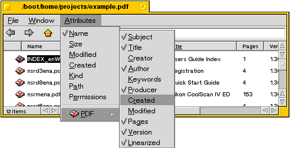

Tracker Attributes
BePDF Versions 0.9.3, and later, now feature, by popular request, Tracker attributes!
Viewing PDF attributes in Tracker
Open a Tracker window containing one or more PDF files (the window can contain other types of files, also).
Change the Tracker window contents display to 'List View'
Select 'Attributes' from the Tracker Menu
Select PDF and choose from the list the attributes to be displayed
To edit PDF attributes
You can edit PDF attributes directly in a Tracker window, see Haiku's user guide "Workshop: Filetypes, Attributes, Index and Queries". These changes will be saved with the PDF. BePDF will not overwrite the edited attributes unless the command key is pressed while the file is being loaded -- the file attributes will revert to the default BePDF attributes at that time.